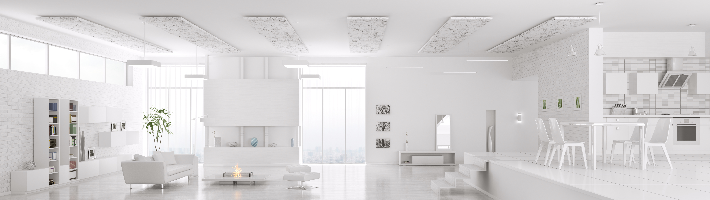
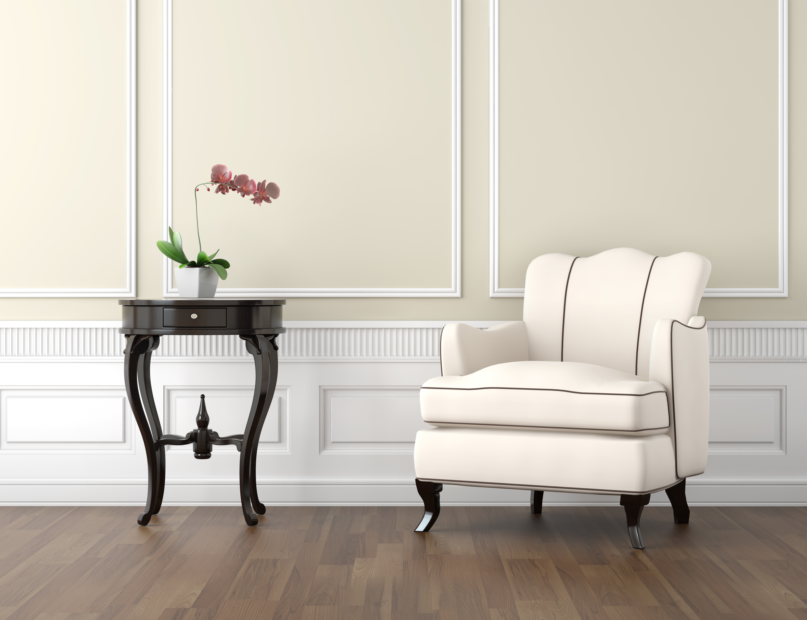
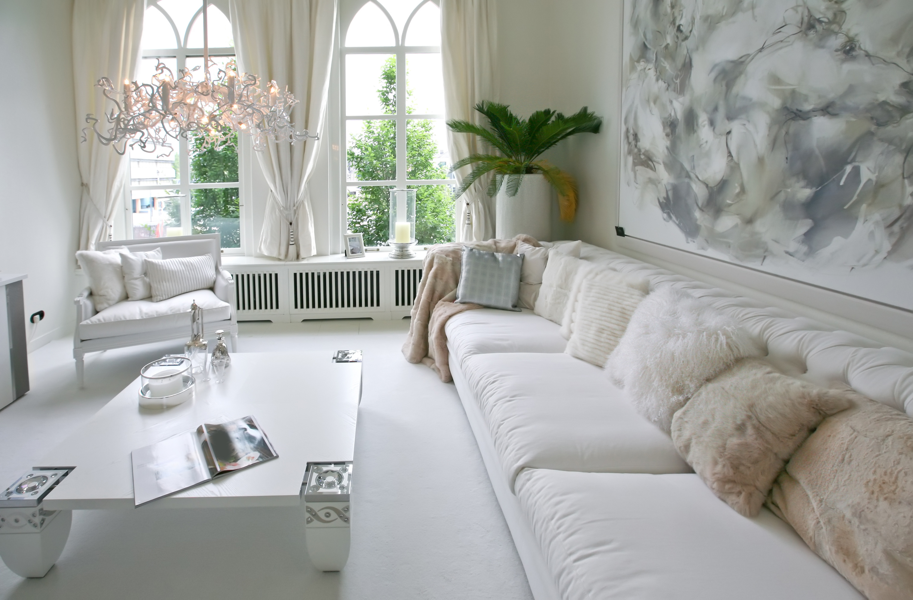
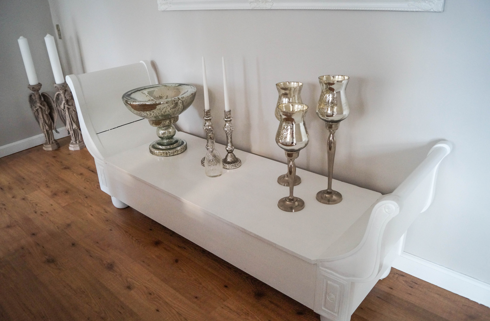

Når det kommer til boligindretning, kan det være svært, at vide, hvor man skal begynde, hvis man
ikke helt forstår stilgenren. Derfor har vores designere samlet en guide, til at opnå en fuldkommen
herregårdsstil samt en masse inspiration, så du kan få en lækker, stilren og ekslusiv boligindretning.

Herregårdsstil formår, at forene det gamle og det nye i en smuk harmonisk sammenhæng. Så følg disse simple 5 trin
for at opnå vaskeægte, ekslusiv herregårdsstil.
1. Kvalitet
Kvalitet er utrolig vigtigt, især når man taler om boligindretning. Man kan både se forskellen men man kan bestemt
også mærke forskellen. Selvfølgelig skal ens hjem være smukt, men det er også vigtigt, at det er behageligt, da man
tilbringer en stor del af ens tid i hjemmet.

2. Hold det lyst
Ved at holde det i lysere farver, gør man automatisk at rummet synes større og hvem vil ikke gerne have mange
kvadratmeter at gøre godt med? Selvfølgelig har alle ikke lige højt til loftet eller lige mange kvadratmeter, men
så snart væggene og loftet er lyse, vil rummet se større ud.
3. Skab kontrast
Måske kan nogle synes, at det blive for meget, hvis rummet er for hvidt. Derfor er det en rigtig god idé, at bryde
denne hvide helhed med eksempelvis en mørk brun i form af lækre egetræsmøbler eller bordplader.
4. Bland gammelt og nyt
En anden måde at skabe en lækker og harmonisk kontrast på, er at blande antikt udseende møbler med nye og moderne.
Eksempelvis kan man tage et lækkert antikt møbel som en tårnbuffet eller en vitrineskænk og mikse det sammen med en
moderne, stilren bordlampe.

5. Accesorize
Sæt prikken over i'et i din boligindretning, ved at pynte med brugskunst af bedste kvalitet.
